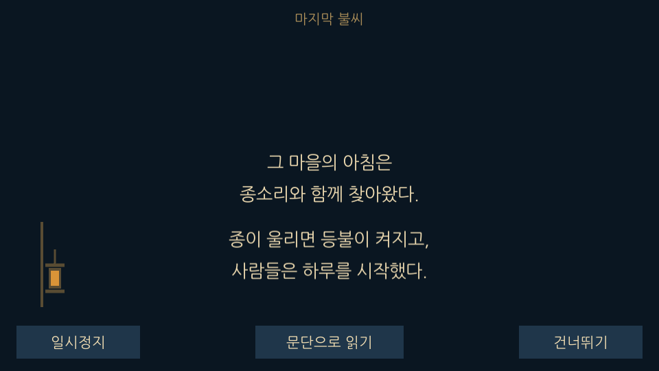
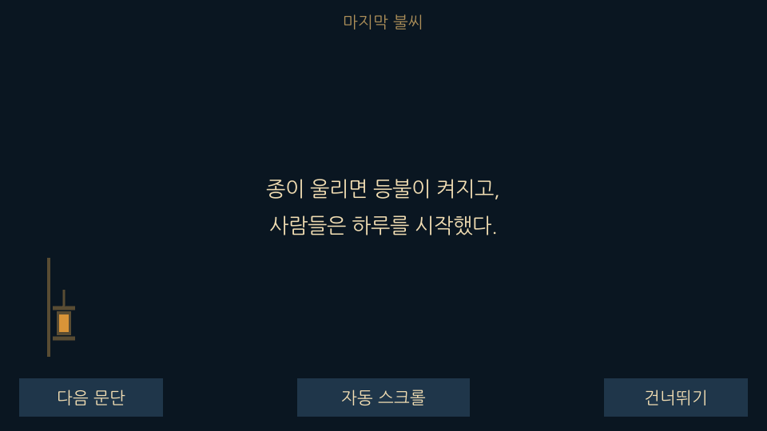
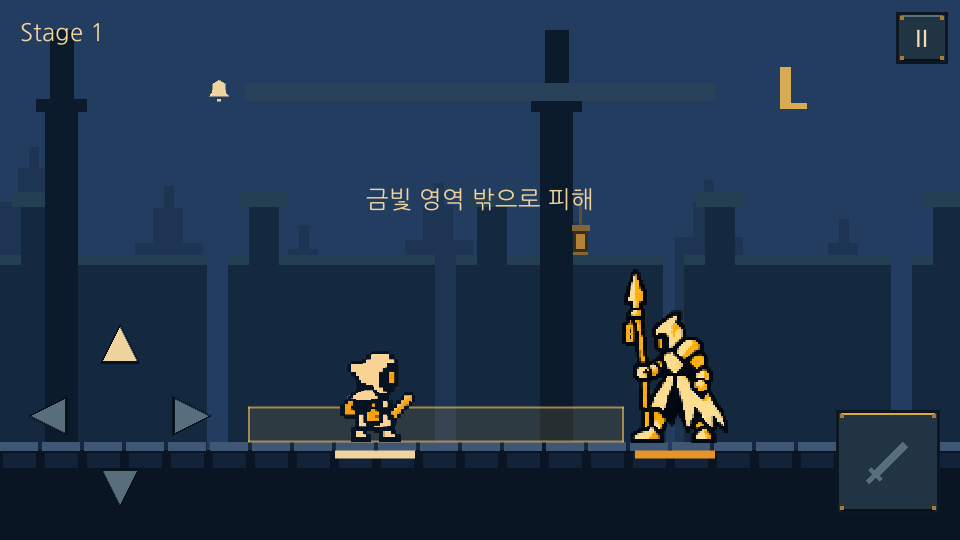
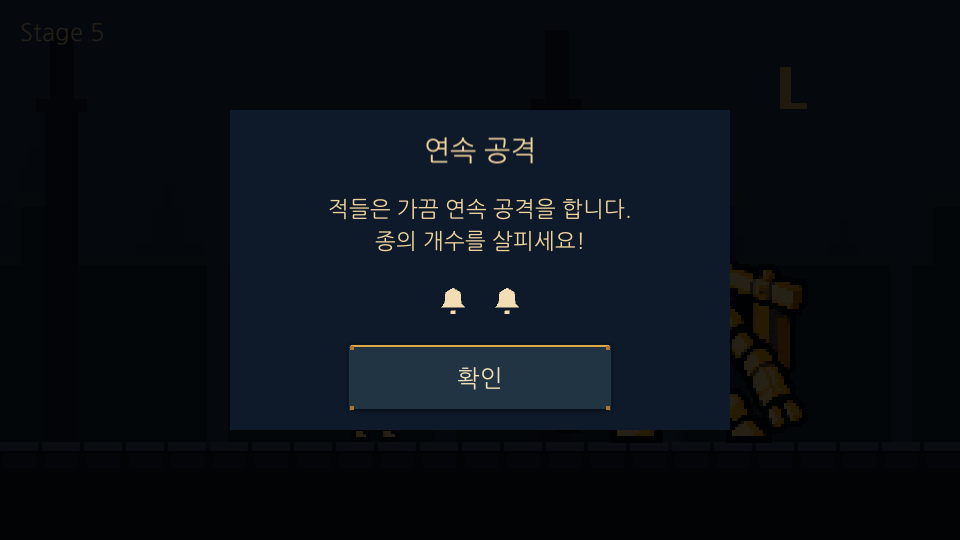
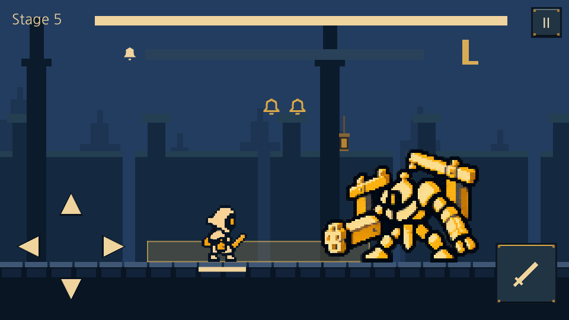
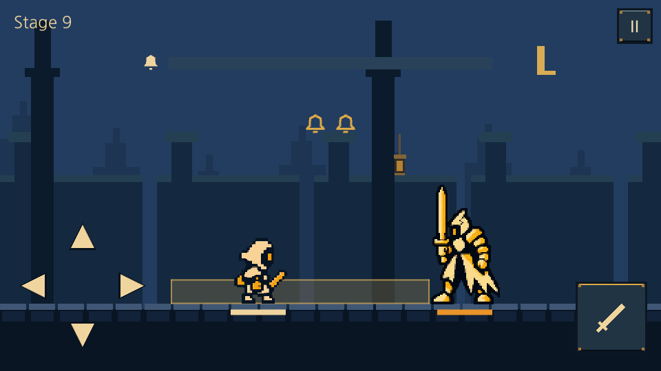
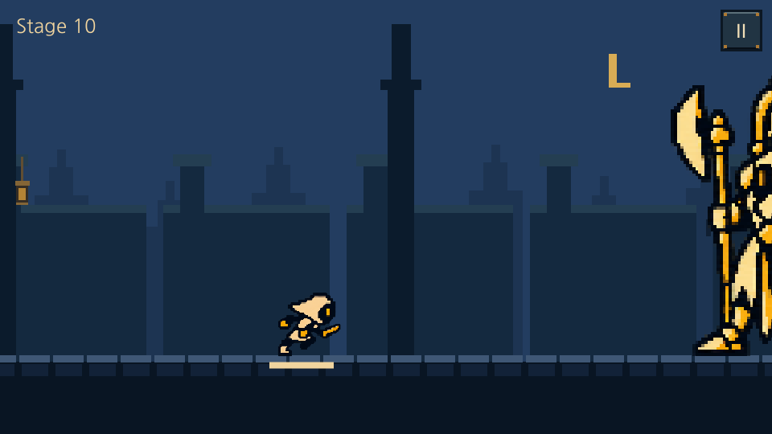
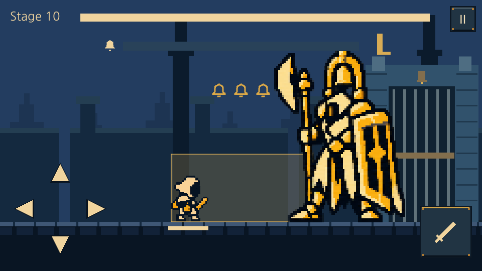
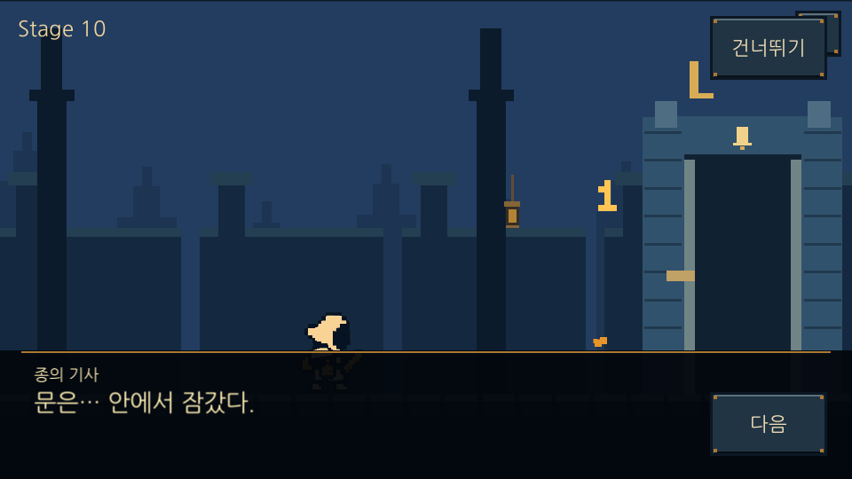
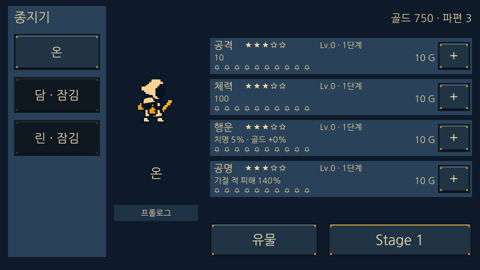

Route v4 · 실제 유니티 실행 화면
로컬 Windows 개발 빌드에서 캡처한 화면입니다. 프로토타입은 10스테이지 종료, 다시하기는 1스테이지입니다.
몬스터 모션 미리보기 · 실행 검사 결과
프롤로그 자동 스크롤
문단별 읽기
1스테이지 · 빗장 초병
5스테이지 · 중앙 안내
확인 후 일반 전투
9스테이지 · 성문 없음
9→10 · 지면 위 성문 등장
10스테이지 · 성문 가디언
가디언 처치 후 열린 성문
로비 · 프롤로그 다시보기